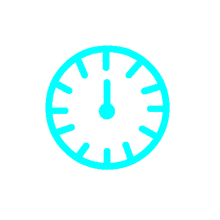

--CHANGELOG--

0.6
Design Changes And Javascript Organization
- Added A Glow Effect To Lots Of Things
- Split Javascript Up Among Files
0.5
A Bunch Of Bugfixes And Additions.
This Update Is The Biggest So Far, So Get Ready!
- Updated Method Of Version Numbering
- Changed Changelog Scrollbar Style Now That It Is Long Enough To Be Visible
- Added More Comments To Javascript
- Fixed Goal And Box Coordinates Not Changing Color In Light Mode
- Replaced Hardcoded Light And Dark Mode Colors With Variables
- Replaced Hardcoded Background Colors With Variables
- Started Dating Changelog Versions
- Stopped Dating Changelog Versions (Couldn't Get It To Look Good)
- Moved The Changelog List Styles To The Seprate CSS File
- Increased The Padding Of The Changelog List Items To 4px On Top And 4px On The Bottom
- Added More Comments To HTML
- Made HTML Neater
- Added Timer
- Added Color Changing
- Started Adding Notes For The Type Of Update In The Changelog
0.4
Feature Removal
- Removed Background Music (It Was To Much Of A Pain To Try And Implement Well)
0.3
Bugfix And Music
- Fixed Button Sound Effects On Main Menu
- Added Background Music | Made With Chrome Music Lab, Music Can Be Found Here
0.2
Bugfixs And Sounds
- Updated Title Image
- Fixed Help And Changelog Buttons Sending You To The Opposite Page
- Added Sound Effects
0.1
A Few Style Changes And The Changelog
- Added Box Coordinates
- Added Goal Coordinates
- Lowered Arrow Buttons
- Added Changelog
- Changed Loading Screen
- Added Comments to CSS